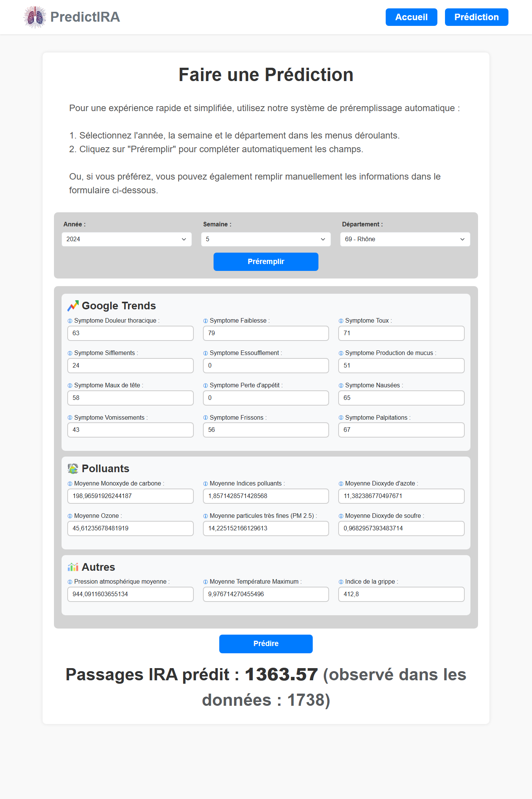
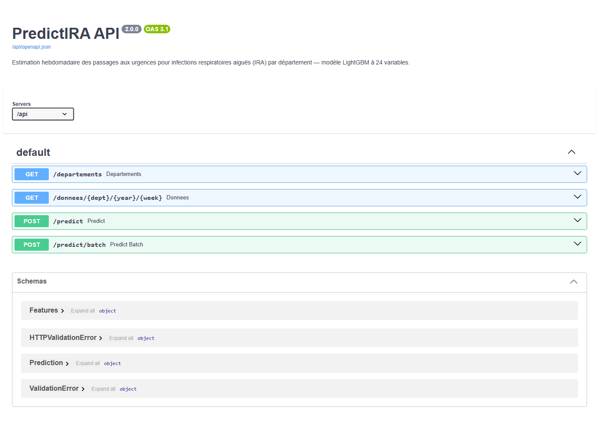
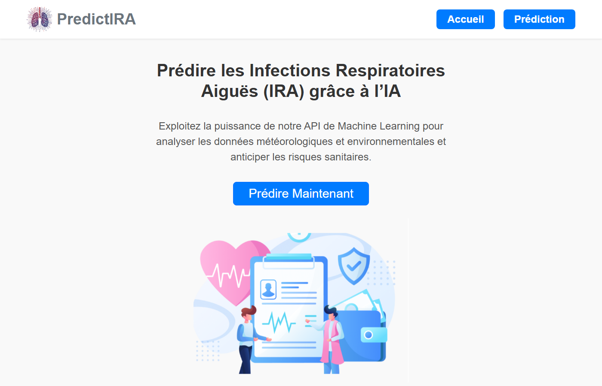
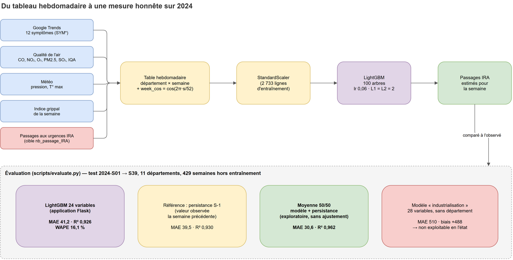
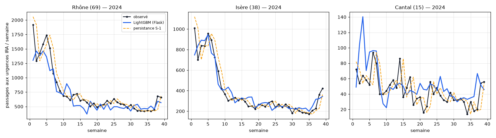
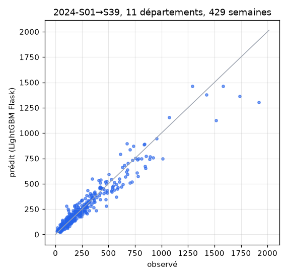
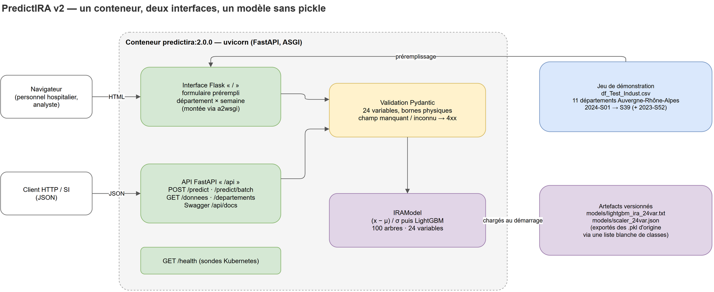
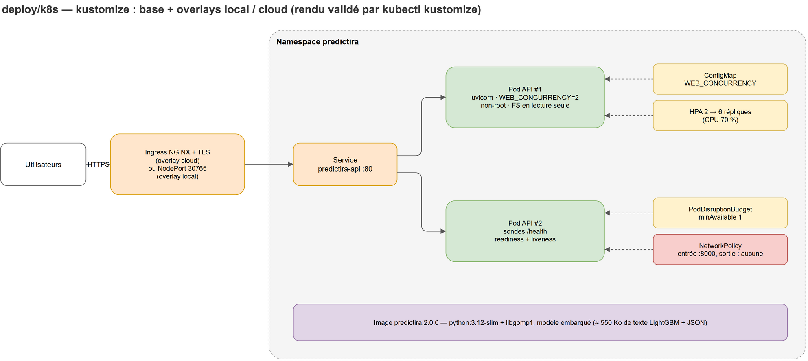

Le projet en vidéo
Deux minutes pour comprendre le besoin, le modèle, les mesures et ce qui a été corrigé. Narration de synthèse vocale.
Chaque hiver, les urgences saturent par vagues
Bronchiolite, grippe, COVID : les infections respiratoires aiguës remplissent les urgences en quelques semaines. Savoir combien de patients arrivent, département par département, aide à dimensionner les équipes et les lits.
Le besoin
Une estimation hebdomadaire par département, lisible par un cadre de santé, sans compétence en data science.
Les signaux
Ce que les gens cherchent sur Google (toux, fièvre, essoufflement…), la pollution, la météo et l'indice grippal de la semaine.
La difficulté
Le Rhône compte 10 fois plus de passages que le Cantal ; l'hiver multiplie les chiffres par 3 ou 4. Un modèle doit tenir sur ces deux échelles.
Captures prises sur la machine de démonstration
Application lancée le 27 octobre 2026 sous Windows 11 (Python 3.12, uvicorn). Les valeurs affichées sont celles du serveur, sans retouche.


/api/predict, lot, données, départements — schéma validé par Pydantic.
D'un tableau hebdomadaire à une estimation, en cinq étapes
Le modèle ne regarde pas l'avenir : il estime la semaine en cours à partir de signaux disponibles plus vite que les statistiques hospitalières consolidées.
- Une ligne par département et par semaine24 variables : 12 tendances Google de symptômes, 6 polluants, pression, température, indice grippal, département, année, semaine.
- La semaine devient un angle
week_cos = cos(2π·s/52)rapproche la semaine 52 de la semaine 1. Revers découvert à l'audit : sans sinus, les semaines s et 52 − s ont le même code (S29 et S23, par exemple). - Mise à l'échelleChaque variable est centrée-réduite avec les moyennes de l'entraînement (2 733 lignes), désormais stockées en JSON lisible.
- LightGBM100 arbres de décision, taux d'apprentissage 0,06, régularisation L1 = L2 = 2. Les variables qui pèsent le plus : le département (31,5 % du gain), le NO₂ (25,5 %), la pression (7,4 %), l'indice grippal (7,0 %).
- ServiceFormulaire Flask pour l'humain, API JSON pour les systèmes, même modèle, même validation.

docs/architecture.drawio).Mesuré sur 2024, comparé à une référence naïve
Le dépôt ne publiait aucune métrique. Le jeu df_Test_Indust.csv couvre 2024-S01 → S39 pour 11 départements d'Auvergne-Rhône-Alpes ;
le scaler livré a été ajusté sur des données de moyenne 2021,9 : ces 429 semaines sont un découpage temporel naturel.
Toute mesure sérieuse doit battre la persistance : « cette semaine = la semaine dernière ».
| Modèle (2024-S01→S39, 429 lignes) | MAE | RMSE | R² | WAPE | Biais |
|---|---|---|---|---|---|
| LightGBM 24 variables (application Flask) | 41,2 | 69,5 | 0,926 | 16,1 % | −2,5 |
| Persistance S-1 (référence naïve) | 39,5 | 67,8 | 0,930 | 15,4 % | +11,4 |
| Moyenne 50/50 modèle + persistance (exploratoire) | 30,6 | 50,0 | 0,962 | 11,9 % | +4,5 |
| LightGBM 28 variables (dépôt « industrialisation ») | 510,3 | 534,7 | −3,358 | 198,8 % | +487,5 |


0,43 ms
Inférence d'une ligne, p50 (p95 0,66 ms), Ryzen 9 3900X, Python 3.12.
0,88 ms
Les 429 lignes de 2024 en un seul lot (p50).
7,05 ms
Requête HTTP complète POST /api/predict en local, p50 sur 500 appels (p95 8,89 ms).
Ce que la remise en route a révélé
Relancer un projet de formation sur une machine neuve, c'est le meilleur des audits. Six constats, tous reproduits, tous corrigés ou documentés.
week_cos gardait le numéro de semaine brut (10 au lieu de 0,35).pickletools, chargement sous liste blanche de classes, export en texte LightGBM + JSON.Un conteneur, deux portes d'entrée, un modèle
L'interface Flask de l'équipe est montée dans l'application FastAPI : un seul processus uvicorn, une seule image, une seule validation.

docs/architecture.drawio.# predictira/model.py — le modèle sans pickle
@classmethod
def from_repo(cls, root: str | Path) -> "IRAModel":
root = Path(root)
booster = lgb.Booster(model_file=str(root / "models" / "lightgbm_ira_24var.txt"))
sc = json.loads((root / "models" / "scaler_24var.json").read_text(encoding="utf-8"))
if sc["features"] != booster.feature_name():
raise ValueError("Le scaler et le modèle n'ont pas les mêmes variables")
return cls(booster, sc["features"], np.array(sc["mean"]), np.array(sc["scale"]))Prêt pour un cluster
deploy/k8s suit le modèle kustomize « base + overlays ». Le rendu des trois variantes est validé par kubectl kustomize (7, 7 et 8 objets).
L'image Docker n'a pas pu être construite pendant cette session (moteur Docker arrêté) : son contenu a été rejoué dans un environnement Python vierge.

Limites, dites franchement
Ce que le modèle n'est pas
- Une prévision à J+7 : il utilise les signaux de la semaine estimée (nowcasting).
- Meilleur que la persistance seule sur 2024 (MAE 41,2 contre 39,5).
- Généralisable hors des 11 départements d'Auvergne-Rhône-Alpes présents dans les données.
Ce qui n'a pas pu être vérifié
- Les données et le code d'entraînement d'origine ne sont pas dans les dépôts : le modèle n'a pas été réentraîné.
- La provenance exacte des colonnes (aucune source citée par le projet) ; aucun téléchargement effectué.
docker buildet déploiement réel sur un cluster.
Les mots du projet
- IRA
- Infection respiratoire aiguë : grippe, bronchiolite, COVID, pneumopathie…
- Persistance
- Prévision naïve « comme la semaine dernière ». Un modèle qui ne la bat pas n'apporte rien de plus.
- MAE / WAPE
- Erreur absolue moyenne, en passages ; WAPE = même erreur rapportée au total observé.
- R²
- Part de la variabilité expliquée (1 = parfait, 0 = pas mieux que la moyenne, négatif = pire).
- Nowcasting
- Estimer le présent avant que les statistiques officielles soient consolidées.
- LightGBM
- Gradient boosting d'arbres de décision : rapide, robuste sur des données tabulaires.
- Pickle
- Format de sérialisation Python ; le charger peut exécuter du code, d'où l'export en texte.
Lancer en local en quatre commandes
git clone -b feat/vitrine-predictira https://github.com/PDUCLOS/PredictIRA.git && cd PredictIRA
python -m venv .venv && .venv/Scripts/pip install -r requirements-dev.txt
python -m pytest -q # 13 tests
python -m uvicorn predictira.api:app --port 18765 # http://127.0.0.1:18765/ et /api/docsRejouer les mesures : python scripts/evaluate.py → docs/metrics.json.
LightGBMFastAPIPydanticFlaskpytestDockerKuberneteskustomizedraw.io